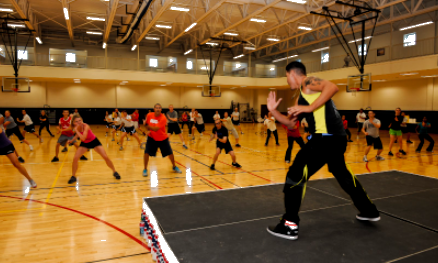
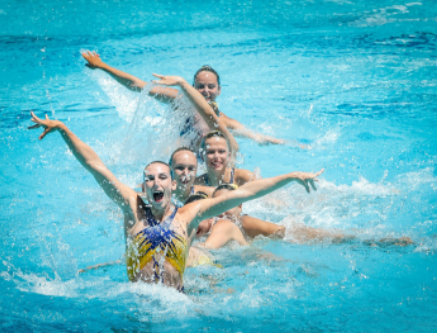

Clases especiales
Zumba

Zumba es una disciplina deportiva que se imparte en clases dirigidas en la que se realizan ejercicios aeróbicos al ritmo de música latina (merengue, samba, reggaeton, cumbia y salsa) con la finalidad de perder peso de forma divertida y mejorar el estado de ánimo de los deportistas.
Las clases de zumba están dirigidas a todas las personas, independientemente de su sexo o edad y no requiere una preparación previa.
Aquagym

La actividad de gimnasia acuática, comúnmente conocida como Aqua Gym, es una manera suave y fácil de realizar deporte, lo cual contribuirá a mantenerte sano, relajar tu mente y estilizar tu figura. El Aqua Gym fortalecerá tus músculos, aumentará el ritmo cardíaco y mejorará el tono de nuestra respiración.
Mejora nuestra forma física general ya que se trabaja toda la musculatura del cuerpo y, además, se aumenta tanto la capacidad aeróbica como anaeróbica. El agua ofrece mucha más resistencia a la hora de movernos, por lo que trabajamos en la tonificación muscular.
Boxeo
Los ejercicios de entrenamiento con saco de boxeo son excelentes para tonificar y moldear los músculos, no solo los de los brazos sino también los de todo el cuerpo. Se logra definir muy bien la silueta con pocos entrenamientos.
Algo que es muy beneficioso de la práctica del boxeo es que es excelente para la salud de tu corazón, una de las cosas que hacen que el boxeo sea tan bueno para tu salud cardiovascular es que el simple acto de golpear con cualquier técnica obliga a muchos músculos a contraerse a la vez.
Sala de Ensayo

Contamos con un espacio donde lo pueden usar para desarrollar diferentes actividades.
Sobre el lugar, es seguro, cuenta con un piso antideslizante. Dentro de la sala hay diferentes materiales para las diferentes actividades, asi cada persona no tiene la necesidad de traer sus propios materiales.